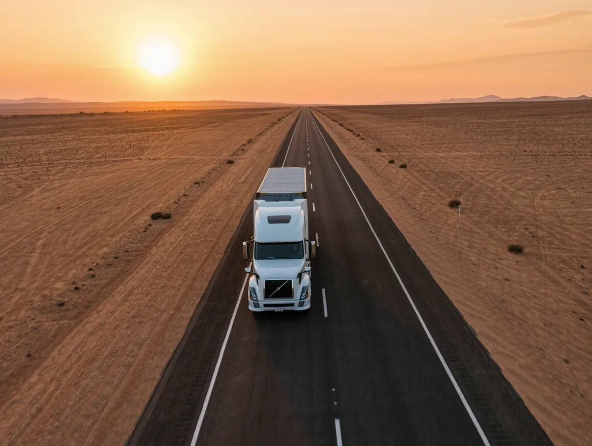

Load planning
The right vehicle and schedule for your cargo and delivery window.
Cross-border and local trucking on the main regional corridors, planned to firm delivery windows.

Road freight carries most goods within Namibia and between Namibia and its neighbours. It is flexible, door-to-door and well suited to regional deliveries and the last leg of imports arriving by sea or air.
SI ALL Logistics plans loads and scheduled runs, coordinates border formalities for cross-border cargo, and gives you a direct line to dispatch so you always know where your goods are.
The right vehicle and schedule for your cargo and delivery window.
Cross-border paperwork and clearance coordinated with the carrier.
Direct contact with dispatch so you know where your cargo is.
Load, route and delivery window agreed.
Cargo collected and loaded.
Border formalities handled if needed.
Delivered and signed for.
Yes. SI ALL Logistics coordinates cross-border road freight on the main regional corridors, including the border paperwork. Ask us about your specific route.
Yes. We run local and national deliveries from Windhoek, including last-mile delivery to businesses and customers.
Yes. We can plan part loads as well as full truck loads, depending on the route and schedule.
You have a direct line to our dispatch team by phone or WhatsApp for updates throughout the journey.
Import, export and in-country freight, planned and tracked by one team so nothing falls between carriers, customs and your warehouse.
Short-term storage, sorting and consolidation in Windhoek, linked directly to your freight and final delivery.
Container and break-bulk shipments through Namibia's main port, with booking, tracking and port handling coordinated for you.
Tell us what you are moving. We reply with a clear quote and a realistic timeline.